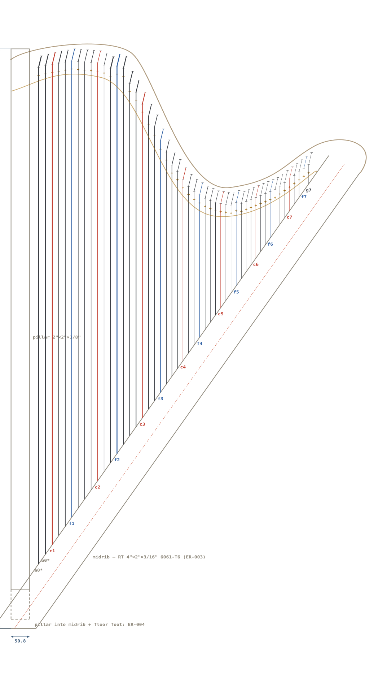

One portable controller: 3D-printed 49-key panel (~504 × 150 mm face, 16 mm key pitch), ULX3S ECP5-85F inside, Oracle as the brains. Boots to a mode menu on the bar TFT; every demonstration reachable in under a minute, no laptop. Sleigh Glide travels alongside (tube + driver board, gate ribbon to the box); the Erand49 harp is a separate instrument that plugs into the rear port.
Root + spokes (PROGRAM.md): this box is the root of the Clash library — Panel is the body, Oracle the brains. Each spoke adds one piece of hardware to it: antennas (T Theremin, U UHF), AD9226 + relay (S SDR), GPS (G GPS), PHY (N Network), harp (E Erand49), sleigh link (C Coil), and for the snooker demo an overhead camera (I Imaging) and a 24 GHz Doppler module (M MAIDEN/firmware/doppler/). Every spoke takes its knobs from S0–S4 and the keys and shows its output on V0.
| Item | Where | Connects |
|---|---|---|
| Battery bay + USB power bank | center-left, underside door | USB-C stub to power board; bank is removable — swap mid-demo, charge at home |
| ULX3S ECP5-85F | center, under display band | everything; GPDI→TFT driver, SDRAM/microSD/USB onboard |
| TFT + HDMI driver (matched kit) | display band, 55 mm | GPDI from ULX3S — verify active area before cutting |
| Key/button matrix (8×8) | under keybed | 49 keys A0–G7 + P0–P9 fold into one scan |
| Slider board | top-right | S0/S1 → 2 ADC ch; S2–S4 → GPIO |
| Audio: ΣΔ/PWM DAC → RC LP → amp | left wall | speaker (underside) + LINE OUT; CW sidetone mixed in |
| Colpitts oscillator boards ×2 | at antenna posts | theremin T; relay to AD9226 ADC for SDR S |
| AD9226-class ADC | rear, at antennas | direct-sampling HF for S |
| u-blox GPS + PPS | rear, at SMA | disciplines IRIG clock (G→I) |
| RMII PHY PMOD | rear, at RJ45 | N: UDP/Ch.10 |
| UHF beacon PA (U) | rear, shielded corner | GPS-disciplined CW/WSPR → TX SMA |
| Sleigh gates (C) | rear SLEIGH 10-pin, TIME/NET group | 8 gate lines (3.3 V, 100 Ω series) + show-switch sense + ground → MOSFET driver board at the tube; ribbon out = pulldowns park the sleigh; 24 V stays at the tube |
| Snooker camera (I) — OV9281 on an overhead mount | external; DVP ribbon + strobe/trigger line to rear | DVP capture + strobe_latch IRIG stamp; per-ball centroids over N |
| Snooker Doppler module (M) — CDM324-class 24 GHz + SPI ADC | external, aimed down the table; header at rear | CIC → FFT → CFAR → velocity records on V0 and over N |
Keys A0–G7 (pedal-harp IDs, gold), sliders S0–S4, buttons P0–P9, display V0. Theremin antennas mount at the ends: pitch rod (~18") right, volume loop (~10") left. Speaker fires from the underside, rear-ported. Silk legends shown are VL-1 mode; final silk gets a mode-neutral layer.
One rule: nothing above 5 V inside the PM box, ever. Mains stays in a sealed wall brick; Sleigh Glide's 24 V coil supply is a different rig and never travels in this case.
| Element | Design |
|---|---|
| Input | 5 V via rear barrel jack (wall brick) or rear USB-C or the internal battery-bay bank — ideal-diode OR inside, so either works and swapping is safe live. Master rocker (PWR) cuts everything. |
| Budget | ULX3S ≈ 1 A · bar TFT + driver ≈ 1 A · audio amp ≈ 0.5 A peak · GPS/RF/misc ≈ 0.5 A → design rail 5 V / 4 A. A demo on a power bank runs the display at reduced backlight. |
| Distribution | Star from the input OR-point; each branch (FPGA, display, audio, RF/GPS) on its own polyfuse so no single fault darkens the whole demo. |
| Sequencing | Audio amp held muted by FPGA GPIO until a bitstream is up — no power-on pop through the speaker. Display backlight enabled by GPIO likewise. |
| UHF TX | WSPR/CW at these power levels lives inside the 5 V budget; the PA branch has its own fuse and the mode menu interlocks TX (no RF unless U mode is selected). |
| Runtime | ~2–3 h on a common 10 Ah bank at demo brightness — enough for any show-and-tell without a wall outlet. |
| Where | What lives there |
|---|---|
| ULX3S config flash (not removable) | The golden bitstream — all modes resident (the 85F fits everything, see SWAG). Box always powers up into PM even with no card. |
| microSD, rear slot | Content, as raw Forth blocks — no filesystem: Forth system + extensions · games · VL-1 patches · sequencer recordings (a block range per grandkid — "take your song home" = hand them a card) · spoke demo scripts (snooker, SDR, beacon, net) · logs (CW transcripts, WSPR spots, IRIG captures) |
| Spare "demo card" microSD, lid pocket | A known-good clone of the card above, games preloaded, recording area blank. Card trouble mid-demo = swap, not debug — same philosophy as the spare battery bank. |
One card is enough for every mode — block ranges partition it (system / games / recordings / scripts / logs), and even a small card is thousands of times the need. The rear USB jack is serial console and programming only, never storage: a USB stick would need a USB host stack in the FPGA, ruled out like the USB touchscreen.
Personal cards — the card is the person. Each grandkid (or student, or visitor) gets their own microSD: a clone of the base image plus their personal blocks — name (V0 greets them at boot), their songs and patches, their game saves and high scores, their Forth programs, their CW practice log, their preferred voice/tempo defaults. Insert your card and the box becomes your PM; swap cards and it's someone else's. No card at all = guest mode from flash defaults. Cards are labeled and color-coded per kid and live in the lid pocket; taking your card home is taking your whole musical world with you — and bringing it back next visit picks up where you left off.
S3 MODE: P · O · E · T · I · C — the mnemonic is printed on the panel and the slider is the state
| Zone | Mode |
|---|---|
| P | Panel — control surface; VL-1 synth mode: voices, rhythms, sequencer, One Key Play. Voice select: MUSIC (P6) + black-key digit, shown on V0 |
| O | Oracle — Forth console, games from SD, and the doorway to the spoke demo scripts (SDR waterfall, UHF beacon, network, imaging, radar) |
| E | Erand49 — harp mode (harp plugged into the rear HARP port) |
| T | Theremin — antennas live, envelope/spectrum on V0 |
| I | IRIG/GPS clock — big time display, lock status, holdover vs disciplined |
| C | CW — keyer sends, decoder prints (UHF TX interlock lives here) |
A mode change takes effect after the slider rests ~1 s in the new zone, with a banner on V0 during the handoff — a bumped slider never yanks a demo. S4 stays orthogonal within every mode: OFF · CAL (retune/calibrate this mode) · PLAY · REC (record in this mode). RESET (P0) re-inits the current mode. Deeper choices (which game, which band, which demo script) are V0 + keys, one level down.
Erand49/LAYOUT.html)The instrument, true scale — this is the live generated drawing, identical to figure 1 in Erand49/LAYOUT.html (regenerate with Erand49/gen_erand49.py):

Setup: the PM box simply sits on the floor beside the harp — no dock, no mount. One locking cable from the PM's rear HARP port to the harp's plinth (98-ch IR mux, 13× ADC, harp controller). CAL re-baselines the sensors on site; they are potted in the neck rail, rigid to the flat pins, so they never need realignment.
| Link element | Design |
|---|---|
| Connector | HARP port on the PM rear: locking EtherCON-style RJ45 shell (stage-grade latch — a tripped cable unlatches, it doesn't drag the harp over). Same connector on the plinth. |
| Cable | One shielded Cat-6, 2–3 m: two pairs carry 5 V + return to the harp; one differential pair harp→box (I²S 24/96 audio + 3 Mbaud event frames, framed together, harp is clock master); one differential pair box→harp (control). |
| Not Ethernet | Cat-6 is used only as a rugged shielded 4-pair cable with a stage-grade locking connector — there is no networking on it: the pairs carry raw 5 V, I²S, and UART, point-to-point. The real network lives on the separate NET port. Guard against mix-ups: HARP port, plug shells, and cable ends color-coded gold; NET black; and neither end is damaged by the wrong socket — the harp link idles until its framing handshake, and a PHY ignores it. |
| Power budget | The 98 IR pairs are scanned through the mux — only a handful lit at once — so harp draw is ~0.5 A at 5 V, fine over the cable pairs. Gate 1 measures it; if real load exceeds the budget, the plinth gets its own barrel jack + bank bay under the same 5-V-only rule. |
| Where the smarts sit | Pluck detect (CORDIC mag + CA-CFAR) runs harp-side in the plinth per the handoff; the box receives audio + note events. No harp-side board (one FPGA rule, 2026-09-15): the 13 ADCs daisy-chain over the EtherCON link to the box. |
Travel: the harp never comes apart — 49 strings stay at tension (no 45-minute retune at the destination) and the sensors are potted in the neck sensor rail, rigid to the flat pins, so alignment survives the road. It rides in its own rigid column case with a soft cover over the strings, like any touring lever harp. Setup at the destination: stand the harp, seat the PM in front (or on any table), click one cable, S3 to E, CAL on S4 — the CAL pass re-baselines all 98 sensor thresholds in seconds, absorbing temperature and ambient-IR differences. The dependency runs one way: the harp is deliberately silent — taut strings on a rigid frame, no soundboard — so the PM is literally its voice. Pluck vectors come down the gold cable; the harp voices play out through the PM mixer to the speaker, or LINE OUT to a real amp when the room is bigger than the built-in speaker. Harp without PM is a mute sculpture, so wherever the harp goes, the PM goes; the reverse is free — E mode with no harp connected shows a "connect harp" screen and offers the synth keyboard instead.
| Piece | Carried | Hookup |
|---|---|---|
| PM box | the device | 5 V brick or USB power bank |
| Sleigh Glide | own case: driver board + coil tube, rolled, 10-wire ribbon | plugs into the rear SLEIGH connector; 24 V supply stays home unless the village travels |
| Erand49 harp | rigid column case, strings stay tensioned, sensors potted in the neck rail | one locking cable to HARP port; CAL re-baselines sensors on site |
| Antenna rods | unscrew, clip inside lid | binding posts |
| Snooker kit (I·M) | camera + lens + clamp mount, Doppler module, two cables — small pouch | DVP ribbon + strobe TRS, SPI header; the table itself stays home (Sleigh Glide's village sits on it) |
| Cue card (paper) | lid pocket | per-mode checklist: what to say, what to show, how to reset |
| Spare demo microSD | lid pocket | known-good clone — swap, not debug, mid-demo |
| Spare battery bank | lid pocket | charged; this is the "battery swap" |
Decision note: physical keys, sliders, and buttons stay. They are the instrument (velocity, feel, two-hand play), they demo the FPGA lesson (matrix scan, debounce, ADC), they survive grandkids, and they work with eyes on the room. If the matched TFT kit offers an I²C capacitive touch option (GT911-class), take it as a bonus — tap-to-select on the mode menu is a cheap I²C reader block — but nothing in any mode may require touch. USB-host touch panels are ruled out (USB host on the FPGA is a project of its own).